Basic statistics
Of course, R was written by statisticians, for statisticians. We’re not going to go deep into stats - partly because I’m not really that qualified to teach it, and because we don’t have time to cover all of the potential needs that people in the course will have. But we can cover a few of the basics, and introduce the common R way of fitting statistical models.
t-test
We’ll keep going with our gapminder data; we want to test if GDP is significantly different between the Americas and Europe in 2007; so we can use a basic two-sample t-test.
First, let’s search the help to find out what functions are avaible: ??"t-test" . Student’s t-test is the one we want. There are a few variations of the t-test available. If we are testing a single sample against a known value (for example, find out if something is different from 0), we would use the single-sample t-test like so:
# Simulate some data with a normal distribution, a mean of 0, and sd of 1.
data <- rnorm(100)
mean(data)## [1] -0.1954421t.test(data, mu=0)##
## One Sample t-test
##
## data: data
## t = -1.9793, df = 99, p-value = 0.05056
## alternative hypothesis: true mean is not equal to 0
## 95 percent confidence interval:
## -0.3913692104 0.0004849928
## sample estimates:
## mean of x
## -0.1954421## Unsurprisingly, not significant.For our GDP question data, we want to use a two-sample t-test. I like using the formula specification because it’s similar to how many other statistical tests are specified: t.test(Value ~ factor, data=)
Since we’re only interested in Europe and the Americas in 2007, we need to do a bit of filtering of the data.
library(dplyr)
gdp_07_EuAm <- filter(gapminder,
continent %in% c("Americas", "Europe"),
year == 2007)
summary(gdp_07_EuAm)## country year pop
## Albania : 1 Min. :2007 Min. : 301931
## Argentina : 1 1st Qu.:2007 1st Qu.: 4933193
## Austria : 1 Median :2007 Median : 9319622
## Belgium : 1 Mean :2007 Mean : 26999449
## Bolivia : 1 3rd Qu.:2007 3rd Qu.: 27379710
## continent lifeExp gdpPercap
## Africa : 0 Min. :60.92 Min. : 1202
## Americas:25 1st Qu.:72.89 1st Qu.: 7952
## Asia : 0 Median :76.19 Median :13172
## Europe :30 Mean :75.81 Mean :18667
## Oceania : 0 3rd Qu.:79.36 3rd Qu.:31320
## [ reached getOption("max.print") -- omitted 2 rows ]gdp_07_EuAm <- droplevels(gdp_07_EuAm)t.test(gdpPercap ~ continent, data = gdp_07_EuAm)##
## Welch Two Sample t-test
##
## data: gdpPercap by continent
## t = -4.8438, df = 52.996, p-value = 1.148e-05
## alternative hypothesis: true difference in means is not equal to 0
## 95 percent confidence interval:
## -19870.011 -8232.889
## sample estimates:
## mean in group Americas mean in group Europe
## 11003.03 25054.48Simple linear regression
Let’s explore the relationship between life expectancy and year
reg <- lm(lifeExp ~ year, data=gapminder)We won’t go into too much detail, but briefly:
lmestimates linear statistical models- The first argument is a formula, with
a ~ bmeaning thata, the dependent (or response) variable, is a function ofb, the independent variable. - We tell
lmto use the gapminder data frame, so it knows where to find the variableslifeExpandyear.
Let’s look at the output, which is an object of class lm:
reg##
## Call:
## lm(formula = lifeExp ~ year, data = gapminder)
##
## Coefficients:
## (Intercept) year
## -585.6522 0.3259class(reg)## [1] "lm"There’s a great deal stored in this object!
For now, we can look at the summary:
summary(reg)##
## Call:
## lm(formula = lifeExp ~ year, data = gapminder)
##
## Residuals:
## Min 1Q Median 3Q Max
## -39.949 -9.651 1.697 10.335 22.158
##
## Coefficients:
## Estimate Std. Error t value Pr(>|t|)
## (Intercept) -585.65219 32.31396 -18.12 <2e-16 ***
## year 0.32590 0.01632 19.96 <2e-16 ***
## ---
## Signif. codes: 0 '***' 0.001 '**' 0.01 '*' 0.05 '.' 0.1 ' ' 1
##
## Residual standard error: 11.63 on 1702 degrees of freedom
## Multiple R-squared: 0.1898, Adjusted R-squared: 0.1893
## F-statistic: 398.6 on 1 and 1702 DF, p-value: < 2.2e-16As you might expect, life expectancy has slowly been increasing over time, so we see a significant positive association!
Plot the data with the regression line, along with confidence limits
p <- ggplot(gapminder, aes(x = year, y = lifeExp)) + geom_point()
dummy <- data.frame(year = seq(from = min(gapminder$year),
to = max(gapminder$year),
length.out = 100))
pred <- predict(reg, newdata=dummy, interval = "conf")
dummy <- cbind(dummy, pred)
p + geom_line(data = dummy, aes(y = fit)) +
geom_line(data = dummy, aes(y = lwr), linetype = 'dashed') +
geom_line(data = dummy, aes(y = upr), linetype = 'dashed')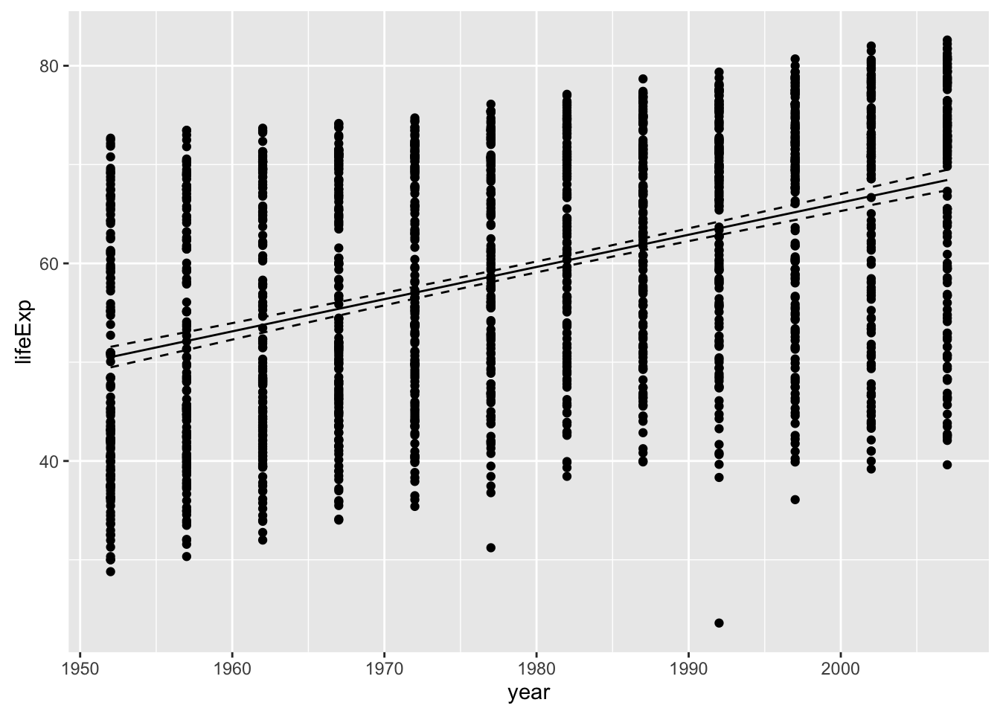
ggplot2 will also generate a fitted line and confidence intervals for you - which is useful, but only works for a univariate relationship … it’s also nice to do it yourself as above so you know that the fit is coming directly from regression model you ran.
p + geom_smooth(method="lm")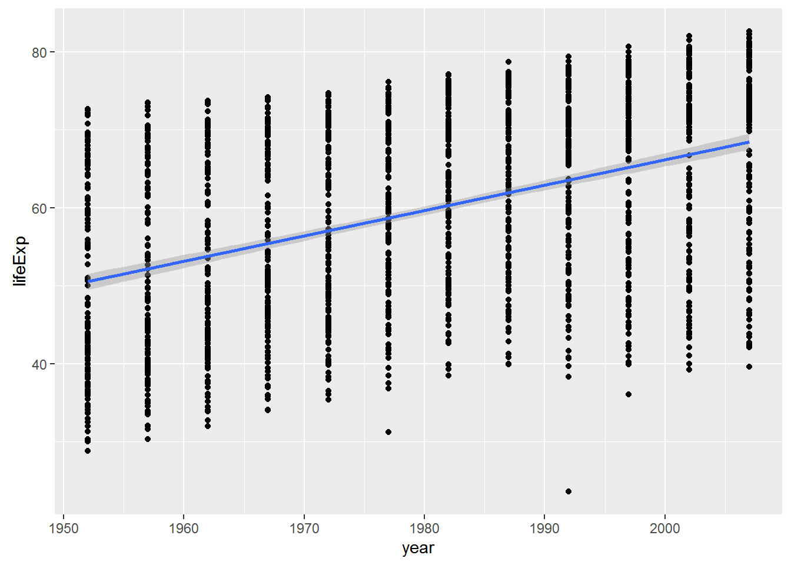
Checking Assumptions
We can check these assumptions of the model by plotting the residuals vs the fitted values.
fitted <- fitted(reg)
residuals <- resid(reg)
ggplot(data=NULL, aes(x = fitted, y = residuals)) + geom_point() +
geom_hline(yintercept = 0)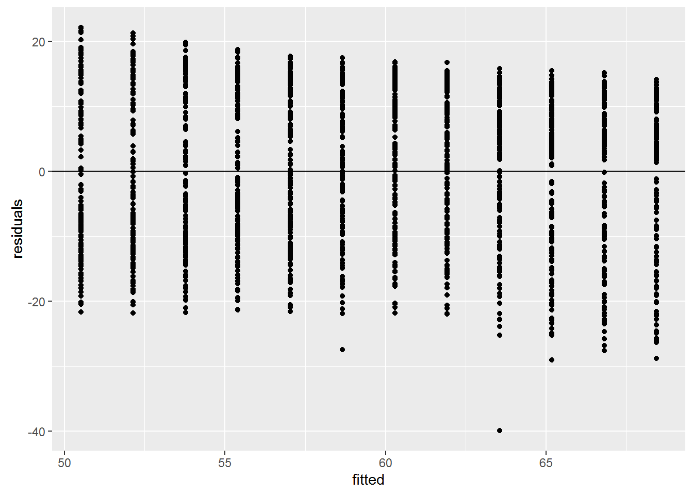
We can check also assumptions using plot(). There are actually a bunch of different plot methods in R, which are dispatched depending on the type of object you call them on. When you call plot on an lm object, a series of diagnostic plots is created to help us check the assumptions of the lm object.
plot(reg)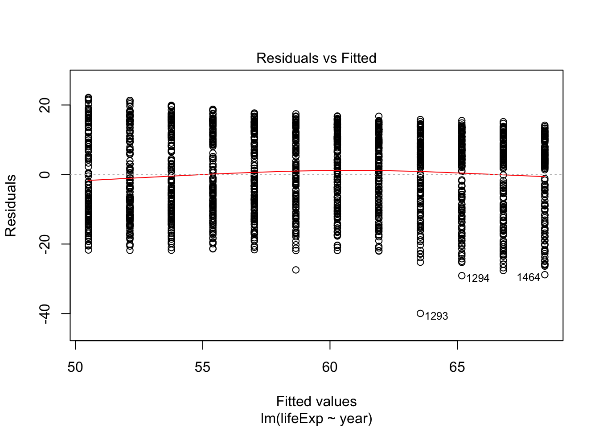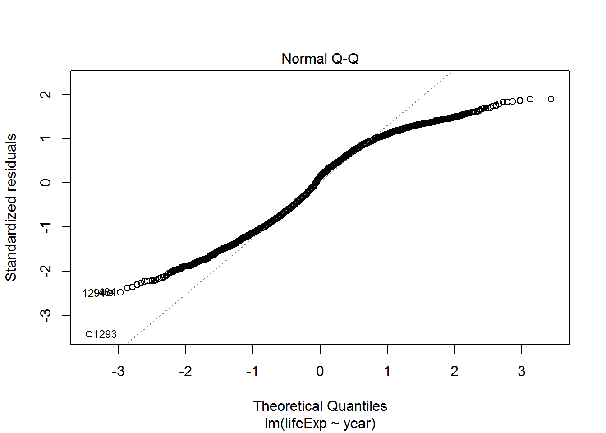 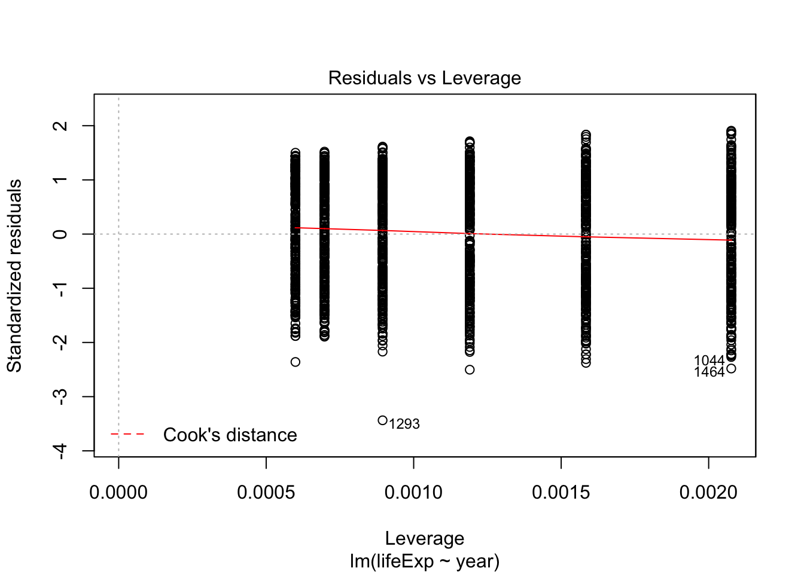
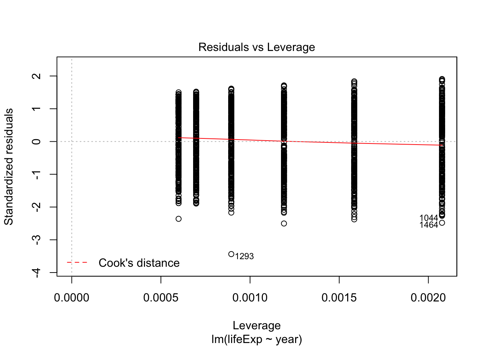
Get more information on these plots by checking ?plot.lm.
Analysis of Variance (ANOVA)
Now say we want to extend our GDP analysis above to all continents, then we can’t use a t-test; we have to use an ANOVA. Since an ANOVA is simply a linear regression model with a categorical rather than continuous predictor variable, we still use the lm() function. Let’s test for differences in petal length among all three species.
gap_07 <- filter(gapminder, year == 2007)
gdp_aov <- lm(gdpPercap ~ continent, data=gapminder)
summary(gdp_aov)##
## Call:
## lm(formula = gdpPercap ~ continent, data = gapminder)
##
## Residuals:
## Min 1Q Median 3Q Max
## -13496 -4376 -1332 997 105621
##
## Coefficients:
## Estimate Std. Error t value Pr(>|t|)
## (Intercept) 2193.8 346.8 6.326 3.21e-10 ***
## continentAmericas 4942.4 608.6 8.121 8.79e-16 ***
## continentAsia 5708.4 556.5 10.257 < 2e-16 ***
## continentEurope 12275.7 573.3 21.412 < 2e-16 ***
## continentOceania 16427.9 1801.9 9.117 < 2e-16 ***
## ---
## Signif. codes: 0 '***' 0.001 '**' 0.01 '*' 0.05 '.' 0.1 ' ' 1
##
## Residual standard error: 8662 on 1699 degrees of freedom
## Multiple R-squared: 0.2296, Adjusted R-squared: 0.2278
## F-statistic: 126.6 on 4 and 1699 DF, p-value: < 2.2e-16anova(gdp_aov)## Analysis of Variance Table
##
## Response: gdpPercap
## Df Sum Sq Mean Sq F value Pr(>F)
## continent 4 3.7990e+10 9497557167 126.57 < 2.2e-16 ***
## Residuals 1699 1.2749e+11 75037832
## ---
## Signif. codes: 0 '***' 0.001 '**' 0.01 '*' 0.05 '.' 0.1 ' ' 1Plot
ggplot(data = gap_07, aes(x = continent, y = gdpPercap)) + geom_boxplot()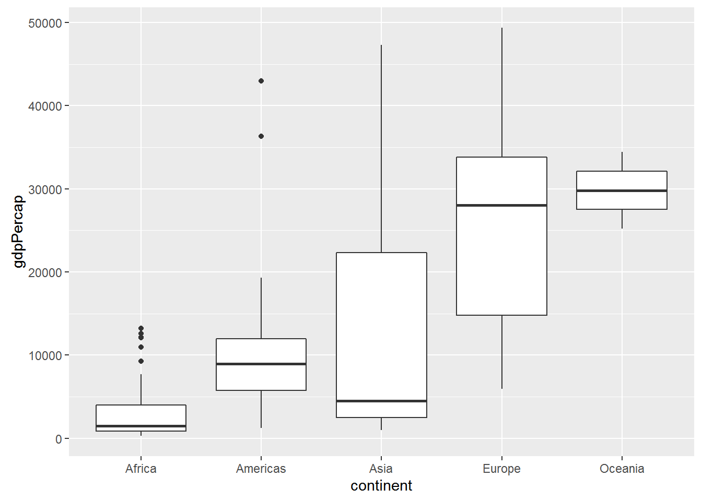
ggplot(data = gap_07, aes(x = continent, y = gdpPercap)) + geom_point()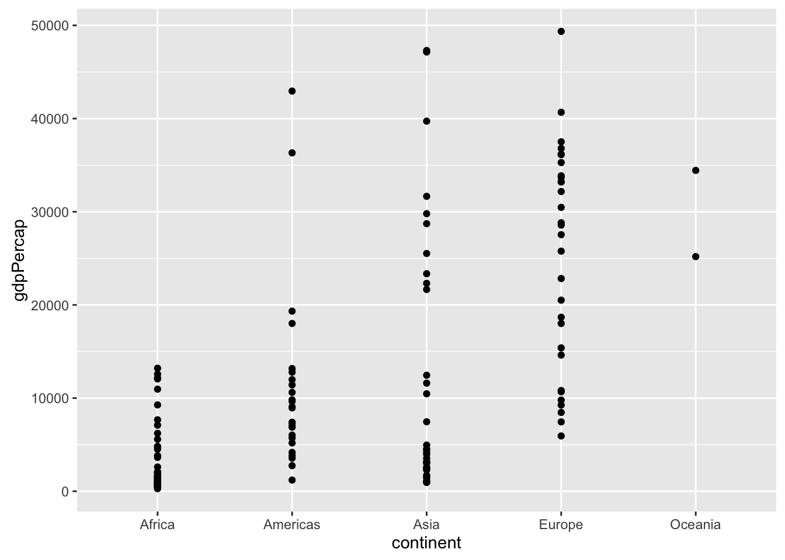
ggplot(data = gap_07, aes(x = continent, y = gdpPercap, colour = continent)) +
geom_jitter()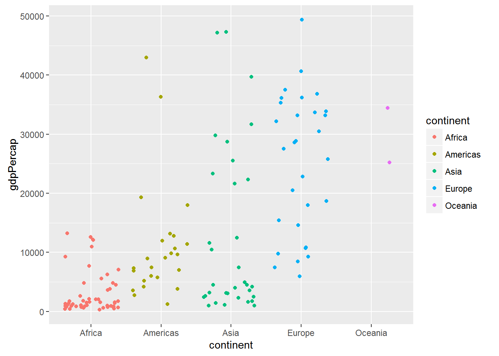
Check assumptions
fitted <- fitted(gdp_aov)
residuals <- resid(gdp_aov)
ggplot(data=NULL, aes(x = fitted, y = residuals)) + geom_point() +
geom_hline(yintercept = 0)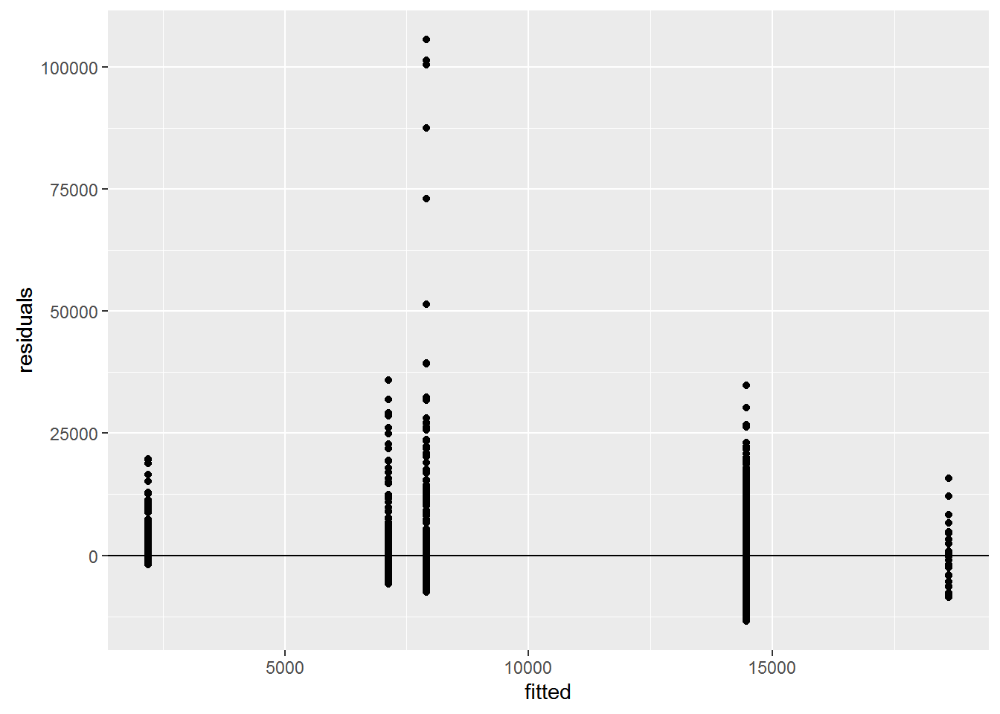
More advanced linear models and model selection using AIC
Here we’re going to divert to a different dataset: Measurements of Sepals and Petals (widths and lengths) in three species of Iris. We are going to explore the relationship between sepal length, sepal width among species.
mod1 <- lm(Sepal.Length ~ Sepal.Width * Species, data=iris) # includes interaction term
mod1a <- lm(Sepal.Length ~ Sepal.Width + Species + Sepal.Width:Species, data=iris) #Equivalent to above
mod2 <- lm(Sepal.Length ~ Sepal.Width + Species, data=iris) # ANCOVA
mod3 <- lm(Sepal.Length ~ Sepal.Width, data=iris)
mod4 <- lm(Sepal.Length ~ Species, data=iris)
AIC(mod1, mod2, mod3, mod4)## df AIC
## mod1 7 187.0922
## mod2 5 183.9366
## mod3 3 371.9917
## mod4 4 231.4520Let’s plot the data:
ggplot(iris, aes(x=Sepal.Width, y=Sepal.Length, colour=Species, group=Species)) +
geom_point() +
geom_smooth(method="lm", formula = y ~ x)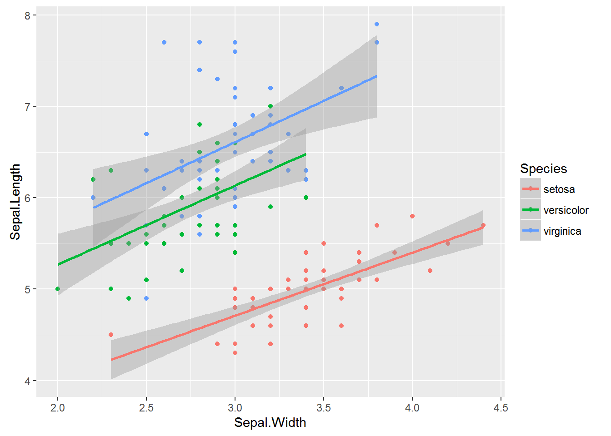
Generalized linear models: Logistic regression
Say you want to know whether elevation can predict whether or not a particular species of beetle is present (all other things being equal of course). You walk up a hillside, starting at 100m elevation and sampling for the beetle every 10m until you reach 1000m. At each stop you record whether or the beetle is present (1) or absent (0).
First, let’s simulate some data
## Generate a sequence of elevations
elev <- seq(100, 1000, by=10)
# Generate a vector of probabilities the same length as `elev` with increasing
# probabilities
probs <- 0:length(elev) / length(elev)
## Generate a sequence of 0's and 1's
pres <- rbinom(length(elev), 1, prob=probs)
## combine into a data frame and remove consituent parts
elev_pres.data <- data.frame(elev, pres)
rm(elev, pres)
## Plot the data
ggplot(elev_pres.data, aes(x = elev, y = pres)) + geom_point()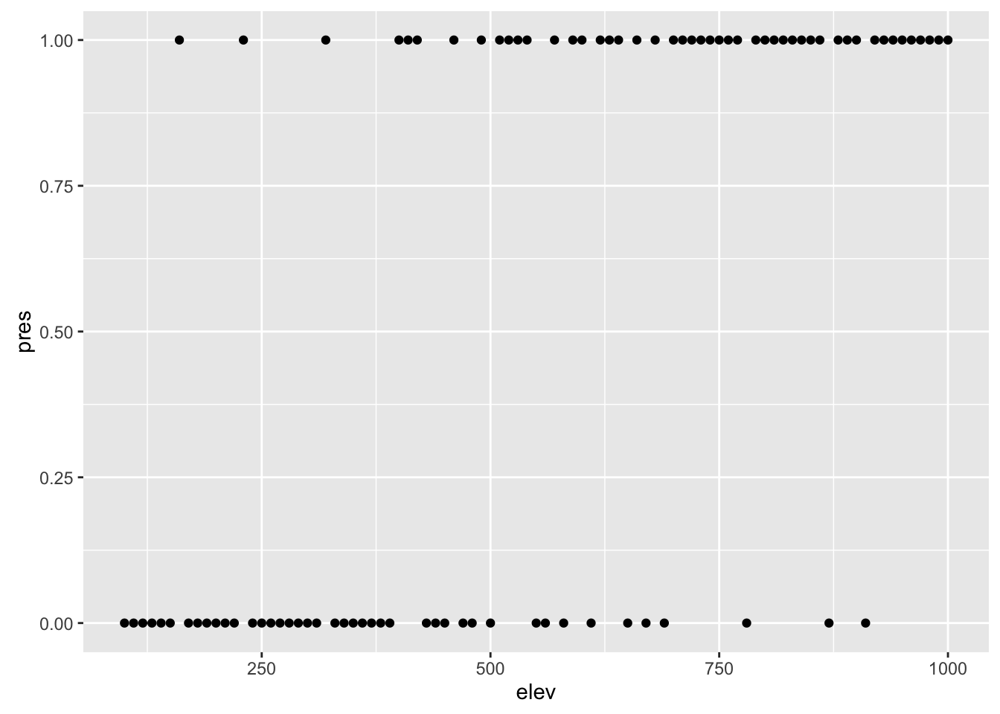
Presence / absence data is a classic example of where to use logistic regression; the outcome is binary (0 or 1), and the predictor variable is continuous (elevation, in this case). Logisitic regression is a particular type of model in the family of Generalized Linear Models. Where ordinary least squares regression assumes a normal disribution of the response variable, Generalized linear models assume a different distribution. Logistic regression assumes a binomial distribution (outcome will be in one of two states). Another common example is the poisson distribution, which is often useful for count data.
Implementing GLMs is relatively straightforward using the glm() function. You specify the model formula in the same way as in lm(), and specify the distribution you want in the family parameter.
lr1 <- glm(pres ~ elev, data=elev_pres.data, family=binomial)
summary(lr1)##
## Call:
## glm(formula = pres ~ elev, family = binomial, data = elev_pres.data)
##
## Deviance Residuals:
## Min 1Q Median 3Q Max
## -1.8153 -0.8146 -0.4304 0.7827 2.0957
##
## Coefficients:
## Estimate Std. Error z value Pr(>|z|)
## (Intercept) -2.892351 0.670117 -4.316 1.59e-05 ***
## elev 0.005090 0.001111 4.580 4.64e-06 ***
## ---
## Signif. codes: 0 '***' 0.001 '**' 0.01 '*' 0.05 '.' 0.1 ' ' 1
##
## (Dispersion parameter for binomial family taken to be 1)
##
## Null deviance: 126.05 on 90 degrees of freedom
## Residual deviance: 96.94 on 89 degrees of freedom
## AIC: 100.94
##
## Number of Fisher Scoring iterations: 4So let’s add the curve generated by the logistic regression to the plot:
ggplot(elev_pres.data, aes(x = elev, y = pres)) +
geom_point() +
geom_line(aes(y = predict(lr1, type="response")))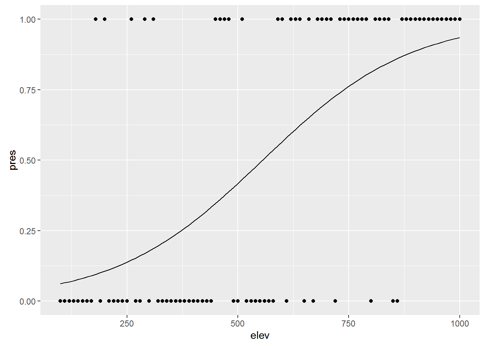